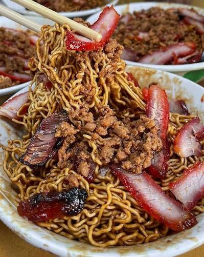

Kolo mee is Sarawak traditional food. The noodle is chewy, and immersed with pork oil. There are charseow pork on top of the noodles
The noodles served in two colors, white which is original colour and red which is the charshao color. Personally I would recommend white because it is a healthier option and less sweet.